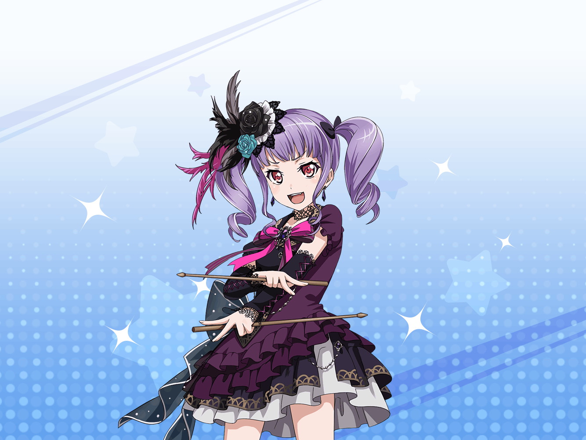

あこ
ばーん！ 衣装完成ーーーっ！
超カッコイイ！
まさに黒の騎士団、闇の破壊者……！！
あこ
ねえ紗夜さ……
紗夜
そう。これが白金さんの作った衣装
あこ
（よ、予想はしてたけど、紗夜さん、
顔色ひとつ変えない！！）
紗夜
１人１人にサブコンセプトがあって、
デザインを少しずつ変えているのね。
アートワークの才能がありそうだわ
あこ
（こ、これってりんりんのこと褒めてるんだよね？
紗夜さんって顔色変わらないから
むずかしいよぉ……）
あこ
（早く他のみんな来ないかなぁ。
ふたりっきりだと、もしかしてまた……）
紗夜
どうしたの？
いつも騒がしいあなたが黙っているなんて。
私の感想に不満でも？
あこ
うぇっ！？
ち、ちがいますっ
紗夜
ならどうしたの？
バンド内の意思疎通は大切なことよ。
意見があるなら言って貰わないと困るわ
あこ
あ、あこはただ、
そのっ、また変なこと言っちゃって……
紗夜
…………？
あこ
紗夜さんを……
お、怒らせたんじゃないかって……
紗夜
……あのね。
私、これでも喜んでいるつもりなんだけれど
あこ
そ、そうなのかなって思ったけど、
で、ででもわかりにくいんだもんっ！！
あっ
紗夜
……どういう意味？
あこ
い、意味っていうか、だって、
ふつう嬉しかったらニコニコするかなって
紗夜
嬉しいし、今後のライブに期待しているわ。
白金さんに対してもありがたいと思ってる
紗夜
それが顔に出るかどうかは個人差でしょう。
無理に笑わなければ私の感謝は通じないの？
あこ
そ、そんなこと言ってるつもりじゃ！
紗夜
…………
あこ
…………
あこ
（うう。やっぱりあこ、紗夜さんと、
うまく話せない……）
あこ
あ、あこはただ、みんなで同じ衣装着て……
なんかこういうのって……
……仲間……みたいだなって……
あこ
（Roseliaは馴れ合いなしだって、
友希那さんや紗夜さんはよく言うけど……
……それでも……）
紗夜
……宇田川さん。
あなた、
勉強にはあまり積極的じゃないそうね
あこ
うっ！
い、いきなりなぜその話をっ
紗夜
あなたは……お姉さんの影響で
ドラムやバンドにあこがれているようだけれど、
BANDという言葉の語源は知っているの？
紗夜
確か世界で二番目に上手いドラマーなのよね？
あこ
うぐっ！！
な、知らない……です
紗夜
まったく、これだから。
BANDという言葉の本来の意味は『束』や『集団』
音楽という意味は入っていないの
あこ
束ねる……集団……そ、それって
紗夜
仲間という言葉は嫌いよ。
同じものごとをする集団。
それだけで仲間という意味になる
紗夜
ただ音楽をやって、
楽しんで満足しては意味がない。
それはわかるわね
あこ
は、はい……
紗夜
私たちはもっと上を目指している。
常に互いを高めあい、妥協を許さず戒め合い、
目的を達成するためのチームでありたいの
紗夜
それはつまり、相手の才能を認め合い、
……信頼し、互いにすべてを賭ける
価値のあるもの同士ということよ
紗夜
そんな重要なものを、あなたは
『仲間』なんて単純な言葉でくくるの？
あこ
紗……夜、さん……
紗夜
曲がりなりにも、あなたは私と湊さんが認めた
Roseliaのドラマーなのよ
紗夜
まあ、世界で二番目かはともかくとして
紗夜
だから……私達Roseliaの間には何もないような
言い方をされるのは、心外だわ
あこ
！！ わ、わかりました！！
あこ、これからもせいいっぱいドラムします！
ダチョウせずイミシミあいます！！
紗夜
……はぁ。
勉強の方も忘れずがんばるのよ？
あこ
もっちろんラジャですよっ！！